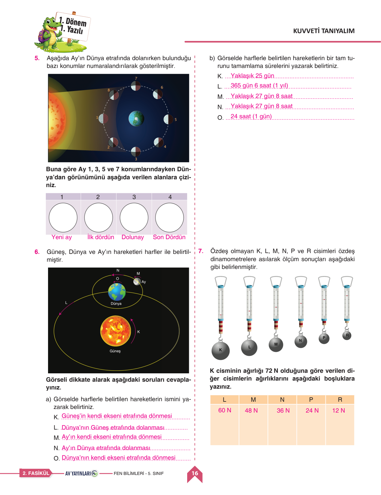

🔬 Fen Bilimleri 1. Dönem 1. Yazılı
Orijinal Sınav Kağıdı Üzerinde Soru Soru Sesli Çözüm • Güneş & Ay • Ay'ın Evreleri • Dinamometre
0
Mevcut Puan / 100
📌 Soru 1: Güneş'in Temel Özellikleri (10 Puan)
✅ Resmi Cevap: 1. Şekli küreseldir. 2. Sıcak gazlardan (hidrojen ve helyum) oluşur. 3. Dünyamızın ısı ve ışık kaynağıdır. 4. Dünyamıza en yakın yıldızdır. 5. Kendi ekseni etrafında saat yönünün tersine döner (yaklaşık 25 gün).
Puan Ver:
📌 Soru 2: Ay'ın Yapısı ve Yaşam Şartları (15 Puan)
✅ Resmi Cevap: A) Atmosfer olmadığı için rüzgâr, yağmur, kar gibi hava olayları görülmez; gece-gündüz sıcaklık farkı aşırıdır; ses iletilmez.
B) Ay'da yaşayabilmek için: Oksijen tüpü, uzay kıyafeti, su ve besin götürülmelidir.
B) Ay'da yaşayabilmek için: Oksijen tüpü, uzay kıyafeti, su ve besin götürülmelidir.
Puan Ver:
📌 Soru 6: Dinamometre ile Kuvvet Ölçümü (15 Puan)
✅ Resmi Cevap: Kuvvetin birimi Newton'dur (N). Dinamometre içindeki yayın uzama miktarı uygulanan kuvvetle doğru orantılıdır; kuvvet arttıkça uzama miktarı da artar.
Puan Ver:

☀️ 1. Güneş'in Özellikleri
- Şekli küreseldir, hidrojen ve helyum gazlarından oluşur.
- Dünyamızın temel ısı ve ışık kaynağıdır.
- Kendi ekseni etrafında saat yönünün tersine 25 günde döner.
🌑 2. Ay'ın Yapısı ve Evreleri
- Ay'ın atmosferi yok denecek kadar azdır, hava olayları yaşanmaz.
- Dünya'dan Ay'ın hep aynı yüzü görünür çünkü kendi etrafında dönme süresi ile Dünya etrafında dolanma süresi eşittir (yaklaşık 27 gün).
- Ana Evreler: Yeni Ay, İlk Dördün, Dolunay, Son Dördün.
⚖️ 3. Dinamometre
- Kuvvet dinamometre ile ölçülür, birimi Newton'dur (N).
- Hassas ölçüm için ince yaylı, büyük kuvvetler için kalın yaylı dinamometre seçilir.